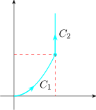
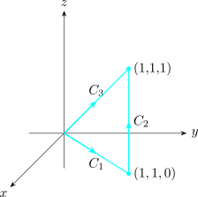

4.5 Line Integrals
Line integrals are integrals of functions along curves. Suppose that \(f(x,y,z)\) is a function whose domain contains the curve \(C\) given by \[\mathbf r(t) = x(t)\,\mathbf i + y(t)\, \mathbf j + z(t)\,\mathbf k,\qquad a\leq t\leq b .\] Divide \([a,b]\) into subintervals, which divides \(C\) into short arcs of lengths \(\Delta s_i\), and choose a point \(P_i^*\) on each. The line integral of \(f\) along \(C\) with respect to arc length is \[\int _C f(x,y,z)\,ds = \lim _{n\to \infty }\sum _{i=1}^n f(P_i^*)\,\Delta s_i ,\] if the limit exists. If \(f\) is the linear density of a wire in the shape of \(C\), it is the mass of the wire. The following theorem evaluates it.
Theorem 4.5.1 (Line integral with respect to arc length). Let \(C\) be the smooth curve \(\mathbf r(t) = x(t)\,\mathbf i + y(t)\,\mathbf j + z(t)\,\mathbf k\), \(a\leq t\leq b\), and let \(\mathbf V(t) = \mathbf r'(t)\) be its velocity vector. Then for \(f\) continuous on \(C\), \[\int _C f(x,y,z)\,ds = \int ^b_a f(\mathbf r(t))\,|\mathbf V(t)|\,dt .\]
Proof. Let \(s(t)\) be the arc length of \(C\) measured from \(\mathbf r(a)\). Then \[\frac {ds}{dt} = \sqrt {\left (\frac {dx}{dt}\right )^2 + \left (\frac {dy}{dt} \right )^2 + \left (\frac {dz}{dt}\right )^2} = |\mathbf r'(t)| = |\mathbf V(t)|,\] so \(ds = |\mathbf V(t)|\,dt\), and the Riemann sums become Riemann sums for the integral on the right, with \(\Delta s_i\approx |\mathbf V(t_i)|\,\Delta t_i\). □
The integral is written with \(ds\) rather than \(dt\) to record that it does not depend on how the curve is parametrised: the speed \(|\mathbf V|\) rises exactly as \(dt\) falls, and the product \(|\mathbf V|\,dt = ds\) is a property of the curve alone.
Example 4.5.2. Evaluate \(\int _C (2 +x^2y)\,ds\), where \(C\) is the upper half of the unit circle.
Solution. Parametrise \(C\) by \(\mathbf r(t) = \cos t\,\mathbf i + \sin t\,\mathbf j\), \(0\leq t \leq \pi \). Then \(\mathbf r'(t) = -\sin t\,\mathbf i + \cos t\,\mathbf j\) and \(|\mathbf r'(t)| = 1\), and on \(C\) the integrand is \(2 + \cos ^2t\sin t\). So \[\int _C (2 + x^2y)\, ds = \int ^{\pi }_0(2 + \cos ^2t\sin t)\cdot 1 \,dt = 2\pi + \left [-\frac {\cos ^3 t}{3}\right ]_0^\pi = 2\pi + \frac {2}{3} .\]
If \(C\) is piecewise smooth, a union of finitely many smooth curves \(C_1,C_2,\dots ,C_n\) with the initial point of each \(C_{i+1}\) the terminal point of \(C_i\), the integral of \(f\) along \(C\) is the sum of the integrals along the pieces: \[\int _C f\,ds = \int _{C_1}f\,ds + \int _{C_2}f\,ds+\cdots + \int _{C_n}f\,ds .\]
- 1.
- Evaluate \(\int _C2x\,ds\), where \(C\) consists of the arc \(C_1\) of the parabola \(y=x^2\) from \((0,0)\) to \((1,1)\) followed by the vertical
line segment \(C_2\) from \((1,1)\) to \((1,2)\).

- 2.
- The figure below shows two different paths from the origin to the point \((1,1,1)\): the segment \(C_3\), and
the segment \(C_1\) from \((0,0,0)\) to \((1,1,0)\) followed by the segment \(C_2\) from \((1,1,0)\) to \((1,1,1)\). Integrate \(f(x,y,z) = x - 3y^2 + z\) along each
path.

Solution.
- 1.
- On \(C_1\) take \(x = t\), \(y = t^2\), so \(\mathbf r_1'(t) = \mathbf i + 2t\,\mathbf j\) and \(|\mathbf r_1'(t)| = \sqrt {1 + 4t^2}\), \(0\leq t\leq 1\). On \(C_2\), the segment from \(\langle 1,1\rangle \) to \(\langle 1,2\rangle \) is \(\mathbf r_2(t) = (1-t)\langle 1,1\rangle + t\langle 1,2\rangle = \mathbf i + (1 + t)\,\mathbf j\), with \(|\mathbf r_2'(t)| = 1\). So \begin {align*} \int _C 2x\,ds & = \int _{C_1}2x\,ds + \int _{C_2}2x\,ds = \int ^1_0 2t \sqrt {1 + 4t^2}\,dt + \int ^1_0 2\,dt\\ & = \left [\frac {(1 + 4t^2)^{3/2}}{6}\right ]_0^1 + 2 = \frac {5\sqrt {5}-1}{6} + 2 \approx 3.70 . \end {align*}
- 2.
- On \(C_3\), \(\mathbf r(t) = t\,\mathbf i + t\,\mathbf j + t\,\mathbf k\), \(0\leq t\leq 1\), with \(|\mathbf r'(t)| = \sqrt 3\) and \(f = t - 3t^2 + t = 2t - 3t^2\). So \[\int _{C_3} f\,ds = \sqrt 3\int ^1_0 (2t-3t^2)\,dt = \sqrt 3\,\big [t^2 - t^3\big ]_0^1 = 0 .\] On \(C_1\), \(\mathbf r(t) = t\,\mathbf i + t\,\mathbf j\), with \(|\mathbf r'(t)| = \sqrt 2\) and \(f = t - 3t^2\). On \(C_2\), \(\mathbf r(t) = \mathbf i + \mathbf j + t\,\mathbf k\), with \(|\mathbf r'(t)| = 1\) and \(f = 1 - 3 + t = t - 2\). So \[\int _{C_1\cup C_2}f\,ds = \sqrt 2\int ^1_0 (t-3t^2)\,dt + \int ^1_0 (t-2)\,dt = -\frac {\sqrt 2}{2} - \frac 32 = -\frac {1}{2}(\sqrt {2}+3) .\] The two paths with the same endpoints give different values: line integrals of a function generally depend on the path.
Line Integrals With Respect to \(x\), \(y\) and \(z\)
Replacing \(\Delta s_i\) by \(\Delta x_i\), \(\Delta y_i\) or \(\Delta z_i\) in the Riemann sums gives line integrals with respect to the coordinates: \begin {gather*} \int _C f\,dx = \int ^b_a f(\mathbf r(t))\, x'(t)\, dt ,\qquad \int _C f\,dy = \int ^b_a f(\mathbf r(t))\, y'(t)\, dt ,\\ \int _C f\,dz = \int ^b_a f(\mathbf r(t))\,z'(t)\, dt . \end {gather*} When they occur together we write \[\int _C P\,dx + \int _C Q\,dy + \int _C R\,dz = \int _C P\,dx + Q\,dy + R\,dz .\]
Example 4.5.4. Evaluate \(\int _C y^2\,dx + x\,dy\), where
- 1.
- \(C=C_1\) is the line segment from \((-5,-3)\) to \((0,2)\), and
- 2.
- \(C = C_2\) is the arc of the parabola \(x = 4-y^2\) from \((-5,-3)\) to \((0,2)\).
Solution.
- 1.
- The segment is \(x = -5 + 5t\), \(y = -3 + 5t\), \(0\leq t \leq 1\), with \(dx = 5\,dt\) and \(dy = 5\,dt\). So \begin {align*} \int _{C_1} y^2\,dx + x\,dy & = \int ^1_0 \left [(-3 + 5t)^2 + (-5 + 5t)\right ]5\, dt = 5 \int ^1_0 (25t^2 - 25t + 4) \,dt\\ & = 5\left (\frac {25}{3} - \frac {25}{2} + 4\right ) = -\frac {5}{6} . \end {align*}
- 2.
- Take \(y = t\) as the parameter: \(x = 4 - t^2\), \(-3\leq t\leq 2\), with \(dx = -2t\,dt\) and \(dy = dt\). So \[\int _{C_2} y^2\,dx + x\,dy = \int _{-3}^2\left [t^2(-2t) + (4 - t^2)\right ]dt = \left [-\frac {t^4}{2} - \frac {t^3}{3} + 4t\right ]_{-3}^2 = \frac {245}{6} .\]
Again the value depends on the path.
A parametrisation \(x = x(t)\), \(y = y(t)\), \(z = z(t)\), \(a\leq t \leq b\), determines an orientation of \(C\), its positive direction being that of increasing \(t\). If \(-C\) denotes the same curve with the opposite orientation, then each \(\Delta x_i\) changes sign, so \[\int _{-C} f\,dx = -\int _C f\,dx ,\qquad \int _{-C} f\,dy = -\int _C f\,dy ,\qquad \int _{-C} f\,dz = -\int _C f\,dz ,\] whereas arc length is always positive, so \[\int _{-C}f\,ds = \int _C f\,ds .\]
Example 4.5.5. A wire takes the shape of the helix \(\mathbf r(t) = \langle \cos t, \sin t, t\rangle \), \(0\leq t\leq 2\pi \), and its density at \((x,y,z)\) is \(z\). Find its mass.
Solution. \(|\mathbf r'(t)| = |\langle -\sin t,\cos t, 1\rangle | = \sqrt 2\), so the mass is \[m = \int _C z\,ds = \int _0^{2\pi } t\sqrt 2\,dt = 2\sqrt 2\,\pi ^2\approx 27.9 .\]
Questions on this section
Stuck on something here? Ask below and it stays attached to this topic.